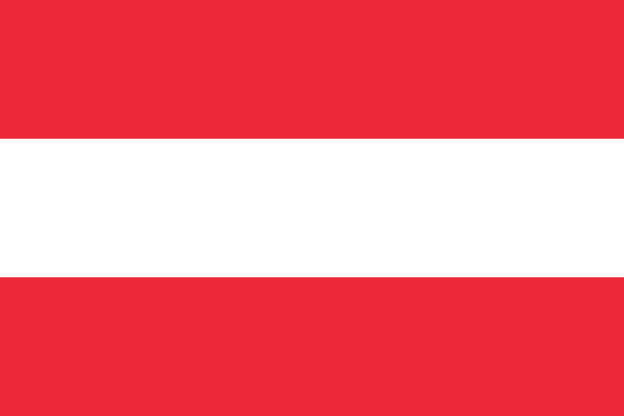
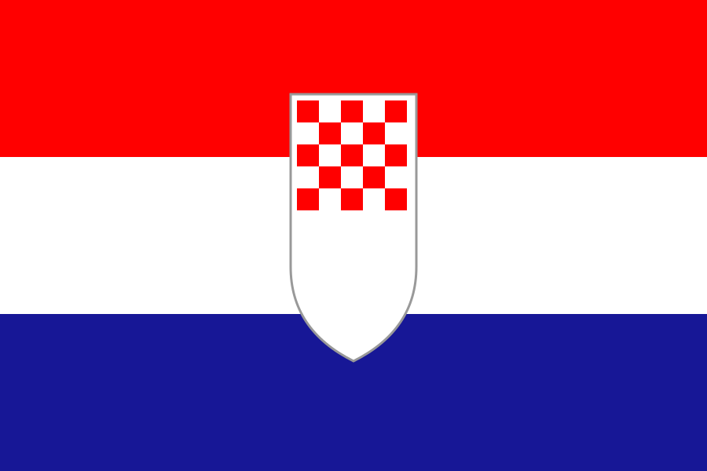
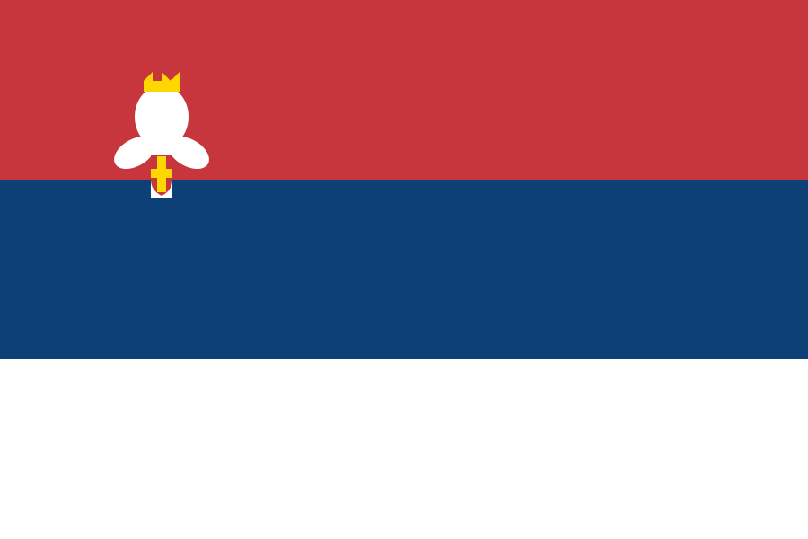
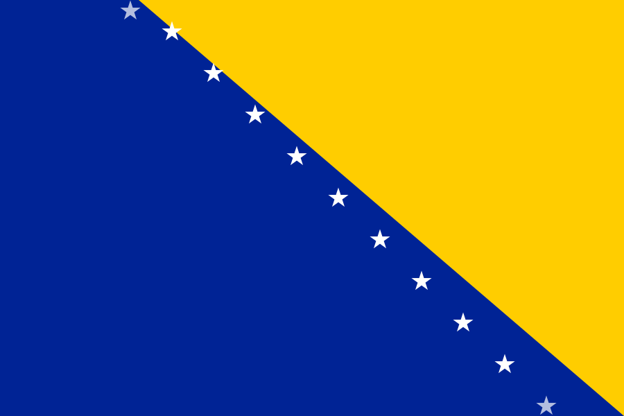
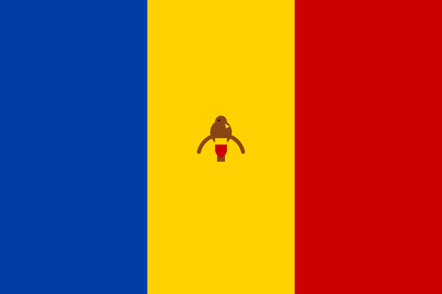

Ambassade de Côte d'Ivoire
Représentation officielle de la République de Côte d'Ivoire en Autriche depuis Vienne, assurant les relations diplomatiques et les services consulaires pour 9 pays d'Europe centrale.
Mission diplomatique & consulaire
L'Ambassade de la République de Côte d'Ivoire en Autriche est la représentation diplomatique officielle de la Côte d'Ivoire à Vienne. Elle assure la défense des intérêts ivoiriens, le développement des relations bilatérales et la protection de ses ressortissants.
Établie conformément à la Convention de Vienne sur les relations diplomatiques de 1961, l'Ambassade remplit une double mission : diplomatique (représentation de l'État auprès du pays hôte) et consulaire (assistance aux ressortissants ivoiriens résidant dans sa juridiction).
Au titre de sa compétence territoriale, l'Ambassade couvre 9 pays : l'Autriche, la Hongrie, la Slovénie, la Slovaquie, la Croatie, la Serbie, la Roumanie et la Bosnie-Herzégovine.
9
pays dans la Circonscription diplomatique
1961
Conv. de Vienne
🇨🇮
Côte d'Ivoire

Pays hôte


Ambassade de Côte d'Ivoire
Vienne, Autriche
S.E.M. Cissé Yacouba
Ambassadeur Extraordinaire et Plénipotentiaire de la République de Côte d'Ivoire en Autriche
Son Excellence Monsieur Cissé Yacouba est accrédité auprès de la République d'Autriche en qualité d'Ambassadeur Extraordinaire et Plénipotentiaire de la République de Côte d'Ivoire. Il est également accrédité auprès de la Hongrie, la Slovénie, la Slovaquie, la Croatie, la Serbie, la Roumanie et la Bosnie-Herzégovine.
Fort d'une longue carrière diplomatique au service de la Côte d'Ivoire, Son Excellence Monsieur Cissé Yacouba représente les intérêts de la République ivoirienne, promeut les relations bilatérales et multilatérales, et coordonne l'ensemble des services de l'Ambassade.
Prise de fonction
2023
Pays d'accréditation
9 pays
Relations Côte d'Ivoire — Autriche
Des relations diplomatiques fondées sur la coopération, les échanges commerciaux et les valeurs partagées.
Circonscription diplomatique
L'Ambassade de Côte d'Ivoire à Vienne est compétente pour les ressortissants résidant dans les 9 pays suivants.
Autriche
Capitale : Wien (Vienne)
Pays hôte de l'Ambassade. Vienne est également siège de nombreuses organisations internationales.

Hongrie
Capitale : Budapest
État membre de l'Union européenne, situé au cœur de l'Europe centrale.

Slovénie
Capitale : Ljubljana
Pays alpin au carrefour de l'Europe centrale, membre de l'Union européenne.

Slovaquie
Capitale : Bratislava
Jeune République d'Europe centrale, membre de l'Union européenne et de la zone euro.

Croatie
Capitale : Zagreb
Pays côtier de la mer Adriatique, dernier pays intégré à l'Union européenne (2013).

Serbie
Capitale : Belgrade
Pays candidat à l'adhésion à l'Union européenne, situé au cœur des Balkans.

Roumanie
Capitale : Bucarest
Grand pays d'Europe du Sud-Est, membre de l'Union européenne depuis 2007.

Bosnie-Herzégovine
Capitale : Sarajevo
État des Balkans en cours d'intégration européenne, à la croisée des cultures.

Moldavie
Capitale : Chișinău
État d'Europe orientale en cours de rapprochement avec l'Union européenne.
Découvrir la Côte d'Ivoire
La République de Côte d'Ivoire est un pays d'Afrique de l'Ouest, bordé au sud par le Golfe de Guinée. Première économie de l'Union Économique et Monétaire Ouest-Africaine (UEMOA), elle est le premier producteur mondial de cacao.
Abidjan, capitale économique, est l'une des métropoles les plus dynamiques d'Afrique subsaharienne. Yamoussoukro est la capitale politique et administrative du pays.
Superficie
322 463 km²
Population
~30 millions
Langue officielle
Français
Monnaie
Franc CFA (XOF)
Indépendance
7 août 1960
Capitale polit.
Yamoussoukro
Besoin d'un service consulaire ?
Notre équipe est prête à vous accompagner dans toutes vos démarches administratives. Prenez rendez-vous dès maintenant.